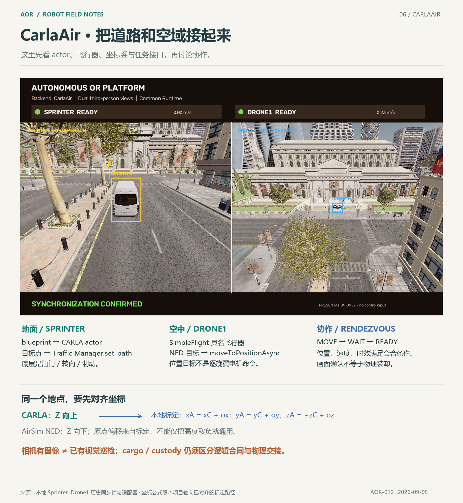

ILLUSTRATED NOTES / 06
CarlaAir 地空协作
看懂车辆与无人机的控制、坐标和会合信号。

这里沿用统一的排版、色彩和来源标注，但阅读顺序改成 载体 → 控制接口 → 坐标 → 会合与观测。车的 blueprint/actor、无人机的名字与飞控配置，比先数 joint 更能解释我们当前在做什么。
汽车的目的地交给 Traffic Manager，无人机的 NED 目标交给 AirSim 飞行控制；OR 负责谁去哪里、何时会合。这三层不应混成“一个模型”。CARLA 的 Z 向上、AirSim NED 的 Z 向下，还要处理本地原点偏移；同一个 [x,y,z] 不一定代表同一地点。详细来源、官方坐标说明、相机配置与历史同步验收边界见 CarlaAir 知识卡。
图中保留原来的历史实景及 presentation-only 标注；它展示的是会合，不把逻辑 inspection 写成视觉巡检，也不把 READY 写成实物装卸成功。